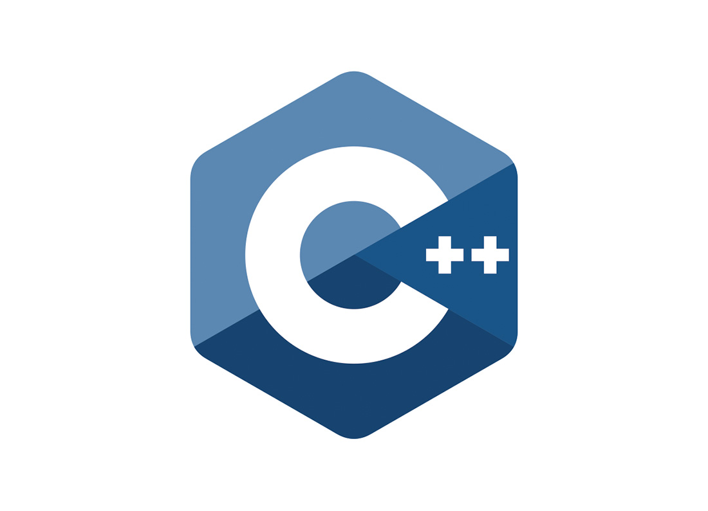

Python

Python由荷兰国家数学与计算机科学研究中心的吉多·范罗苏姆于1990年代初设计，作为一门叫做ABC语言的替代品。
根据2025年8月的TIOBE编程社区指数，Python占比26.14%，本月上升 8.10%。Python 以其简洁的语法、动态类型和丰富的生态库，
在 AI / 机器学习、数据分析、自动化脚本、Web 开发等领域应用广泛，持续领跑 编程语言排行榜。
访问Python官网
C++

C++（c plus plus）是一种计算机高级程序设计语言，由C语言扩展升级而产生 [17]，最早于1979年由本贾尼·斯特劳斯特卢普在AT&T贝尔工作室研发。
根据2025年8月的TIOBE编程社区指数，C++占比9.18%，本月下跌0.86%。C++是一种高性能、面向对象的编程语言，
在游戏引擎、工业软件、金融交易系统、嵌入式开发等领域表现出色。
ISO C++标准委员会网站
C语言
C语言是一种较早的程序设计语言，诞生于1972年的贝尔实验室。
根据 2025年8月的TIOBE编程社区指数，C语言占比9.03%，本月下跌0.15%。C语言具有轻量级、贴近硬件、高效内存管理等特点，主要应用于操作系统、嵌入式系统、驱动程序开发等领域。
C语言中文网